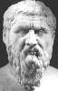

Philosophy Pages
| Dictionary | Study Guide | Logic | F A Q s | ||
|---|---|---|---|---|---|---|
| History | Timeline | Philosophers | Locke | |||
| Philosophy Pages
| Dictionary | Study Guide | Logic | F A Q s | ||
|---|---|---|---|---|---|---|
| History | Timeline | Philosophers | Locke | |||
|

Plato Life and Works . . Socratic method . . Knowing Virtue . . Soul & Form . . Justice . . Social Life . . Specific Virtues . . Good Rulers . . Knowledge . . Value of Justice . . Love Bibliography Internet Sources |
The most illustrious student Socrates had in philosophy was Plato, whose beautifully written dialogues not only offered an admiring account of the teachings of his master but also provided him with an opportunity to develop and express his own insightful philosophical views. In the remainder of our readings from Platonic dialogues, we will assume that the "Socrates" who speaks is merely a fictional character created by the author, attributing the philosophical doctrines to Plato himself. In the middle and late dialogues, Plato employed the conversational structure as a way of presenting dialectic, a pattern of argumentation that examines each issue from several sides, exploring the interplay of alternative ideas while subjecting all of them to evaluation by reason.
Plato was a more nearly systematic thinker than Socrates had been.
He established his own school of philosophy, the Academy, during the fourth century, and he did not hesitate to offer a generation of young Athenians the positive results of his brilliant reasoning.
Although he shared Socrates's interest in ethical and social philosophy, Plato was much more concerned to establish his views on matters of
metaphysics and epistemology, trying to discover the ultimate constituents of reality and the grounds for our knowledge of them.
Plato's Μενων (Meno) is a transitional dialogue: although it is Socratic in tone, it introduces some of the epistemological and metaphysical themes that we will see developed more fully in the middle dialogues, which are clearly Plato's own. In a setting uncluttered by concern for Socrates's fate, it centers on the general problem of the origins of our moral knowledge.
The Greek notion of αρετη [aretê], or virtue, is that of an ability or skill in some particular respect. The virtue of a baker is what enables the baker to produce good bread; the virtue of the gardener is what enables the gardener to grow nice flowers; etc. In this sense, virtues clearly differ from person to person and from goal to goal. But Socrates is interested in true virtue, which (like genuine health) should be the same for everyone. This broad concept of virtue may include such specific virtues as courage, wisdom, or moderation, but it should nevertheless be possible to offer a perfectly general description of virtue as a whole, the skill or ability to be fully human. But what is that?
When Meno suggests that virtue is simply the desire for good things, Socrates argues that this cannot be the case. Since different human beings are unequal in virtue, virtue must be something that varies among them, he argues, but desire for one believes to be good is perfectly universal Since no human being ever knowingly desires what is bad, differences in their conduct must be a consequence of differences in what they know. (Meno 77e) This is a remarkable claim. Socrates holds that knowing what is right automatically results in the desire to do it, even though this feature of our moral experience could be doubted. (Aristotle, for example, would later explicitly disagree with this view, carefully outlining the conditions under which weakness of will interferes with moral conduct.) In this context, however, the Socratic position effectively shifts the focus of the dialogue from morality to epistemology: the question really at stake is how we know what virtue is.
For questions of this sort, Socrates raises a serious dilemma: how can we ever learn what we do not know? Either we already know what we are looking for, in which case we don't need to look, or we don't know what we're looking for, in which case we wouldn't recognize it if we found it. (Meno 80e) The paradox of knowledge is that, in the most fundamental questions about our own nature and function, it seems impossible for us to learn anything. The only escape, Socrates proposed, is to acknowledge that we already know what we need to know. This is the doctrine of recollection, Plato's conviction that our most basic knowledge comes when we bring back to mind our acquaintance with eternal realities during a previous existence of the soul.
The example offered in this dialogue is discovery of an irrational number, the square root of 2. Socrates leads an uneducated boy through the sophisticated geometrical demonstration with careful questions, showing that the boy somehow already knows the correct answers on his own. All of us have had the experience (usually in mathematical contexts, Plato believed) of suddenly realizing the truth of something of which we had been unaware, and it does often feel as if we are not really discovering something entirely new but rather merely remembering something we already knew. Such experiences lend some plausibility to Plato's claim that recollection may be the source of our true opinions about the most fundamental features of reality. (Meno 85d) What is more, this doctrine provides an explanation of the effectiveness of Socratic method: the goal is not to convey new information but rather to elicit awareness of something that an individual already knows implicitly.
The further question of the dialogue is whether or not virtue can be taught. On the one hand, it seems that virtue must be a kind of wisdom, which we usually assume to be one of the acquirable benefits of education. On the other hand, if virtue could be taught, we should be able to identify both those who teach it and those who learn from them, which we cannot easily do in fact. (Meno 96c) (Here Socrates offers a scathing attack on the sophists, who had often claimed that they were effective teachers of virtue.) So it seems that virtue cannot be taught. Plato later came to disagree with his teacher on this point, arguing that genuine knowledge of virtue is attainable through application of appropriate educational methods.
Perhaps our best alternative, Socrates held, is to suppose that virtue is a (divinely bestowed?) true opinion that merely happens to lack the sort of rational justification which would earn it the status of certain knowledge.
Whether or not we agree with this rather gloomy conclusion about the unteachability of virtue, the distinction between genuine knowledge and mere true opinion is of the greatest importance.
For philosophical knowledge, it is not enough to accept beliefs that happen to be true; we must also have reasons that adequately support them.
| Philosophical Ethics | |||||||
|---|---|---|---|---|---|---|---|
| Previous | Next | ||||||
The Φαιδων (Phaedo) concludes Plato's description of the life of Socrates. Its final pages provide what appears to be an accurate account of the death of one of the most colorful personalities in the history of philosophy. (Phaedo 115b) But most of the dialogue is filled with Plato's own effort to establish with perfect certainty what Socrates had only been willing to speculate about in the Apology, that the human soul is truly immortal.
As Plato saw it, hope of survival comes naturally to the philosopher, whose whole life is one of preparation for death. What happens when we die, after all, is that the human soul separates from the human body, and it is concern for the soul rather than the body that characterizes a philosophical life. In fact, Plato argued that since knowledge of the most important matters in life is clearest to the soul alone, its customary attachment to a mortal body often serves only as a distraction from what counts. Here I am, thinking seriously about eternal truth, and then . . . I get hungry or sleepy, and the needs of the body interfere with my study. So, Plato concluded, the philosopher may properly look forward to death as a release from bodily limitations. (Phaedo 67d)
But is there really any reason to believe that the soul can continue to exist and function after the body dies? Plato supposed that there is, and his arguments on this point occupy the bulk of the Phaedo.
The first argument is based on the cyclical interchange by means of which every quality comes into being from its own opposite. Hot comes from cold and cold from hot: that is, hot things are just cold things that have warmed up, and cold things are just hot things that have cooled off. Similarly, people who are awake are just people who were asleep but then woke up, while people who are asleep are just people who were awake but then dozed off.
But then, Plato argues by analogy, death must come from life and life from death. (Phaedo 71c-d) That is, people who are dead are just people who were alive but then experienced the transition we call dying, and people who are alive are just people who were among the dead but then experienced the transition we call being born. This suggests a perpetual recycling of human souls from the realm of the living to the realm of the dead and back.
If this is an accurate image of reality, it would certainly follow that my soul will continue to exist after the death of my body.
But it also supposes that my soul existed before the birth of my body as well.
This may seem like an extravagant speculation, but Plato held that there is ample evidence of its truth in the course of ordinary human life and learning.
As Socrates had proposed in the Meno, the most important varieties of human knowledge are really cases of recollection. Consider, for example, our knowledge of equality. We have no difficulty in deciding whether or not two people are perfectly equal in height. In fact, they are never exactly the same height, since we recognize that it would always be possible to discover some difference—however minute—with a more careful, precise measurement. By this standard, all of the examples we perceive in ordinary life only approach, but never fully attain, perfect equality. But notice that since we realize the truth of this important qualification on our experience, we must somehow know for sure what true equality is, even though we have never seen it. (Phaedo 75b)
Plato believed that the same point could be made with regard to many other abstract concepts: even though we perceive only their imperfect instances, we have genuine knowledge of truth, goodness, and beauty no less than of equality. Things of this sort are the Platonic Forms, abstract entities that exist independently of the sensible world. Ordinary objects are imperfect and changeable, but they faintly copy the perfect and immutable Forms. Thus, all of the information we acquire about sensible objects (like knowing what the high and low temperatures were yesterday) is temporary, insignificant, and unreliable, while genuine knowledge of the Forms themselves (like knowing that 93 - 67 = 26) perfectly certain forever.
Since we really do have knowledge of these supra-sensible realities, knowledge that we cannot possibly have obtained through any bodily experience, Plato argued,
it follows that this knowledge must be a form of recollection and that our souls must have been acquainted with the Forms prior to our births.
But in that case, the existence of our mortal bodies cannot be essential to the existence of our souls—before birth or after death—and we are therefore immortal.
Use of the dialogue as a literary device made it easy for Plato not only to present his own position (in the voice of Socrates) but also to consider (in the voices of other characters) significant objections that might be raised against it. This doesn't mean that philosophy is merely an idle game of argument and counter-argument, he pointed out, because it remains our goal to discover the one line of argument that leads to the truth. The philosopher cautiously investigates every possibility and examines every side of an issue, precisely because that increases the chances of arriving eventually at a correct account of reality.
Thus, Simmias suggests that the relationship between the soul and the body may be like that between musical harmony and the strings of a lyre that produces it. In this case, even though the soul is significantly different from the body, it could not reasonably be expected to survive the utter destruction of that physical thing. (This is an early statement of a view of human nature that would later come to be called epiphenomenalism.) But Socrates replies that this analogy will not hold, since the soul exercises direct control over the motions of the body, as the harmony does not over those of the lyre. Plato's suggestion here seems to be that it would become impossible to provide an adequate account of human morality, of the proper standards for acting rightly, if Simmias were right.
Cebes offers a more difficult objection: what if the body is like a garment worn by the soul? Even though I continue to exist longer than any single article of my clothing does, there will come a time when I die, and some of my clothes will probably continue to exist. In the same way, even if the argument from opposites has shown that the soul can in principle outlast the life of any particular human body, there might come a time when the soul itself ceases to exist. Even if there is life after death, Cebes suggests, the soul may not be truly immortal.
In response to this criticism, Plato significantly revised the argument from opposities by incorporating an additional conception of the role of the Forms. Each Form, he now maintains, is the cause of all of every particular instance that bears its name: the form of Beauty causes the beauty of any beautiful thing; the form of Equality causes the equality of any pair of equal things; etc. But then, since the soul is living, it must participate in the Form of Life, and thus it cannot ever die. (Phaedo 105d) The soul is perfectly and certainly imperishable, not only for this life, but forever.
Despite the apparent force of these logical arguments, Plato chose to conclude the Phaedo by supplementing them with a mythical image of life after death.
This concrete picture of the existence of a world beyond our own is imagined, not reasoned, so it cannot promise to deliver the same perfect representation of the truth.
But if we are not fully convinced by the certainty of rational arguments, we may yet take some comfort from the suggestions of a pleasant story.
| History of Philosophy | |||||||
|---|---|---|---|---|---|---|---|
| Previous | Next | ||||||